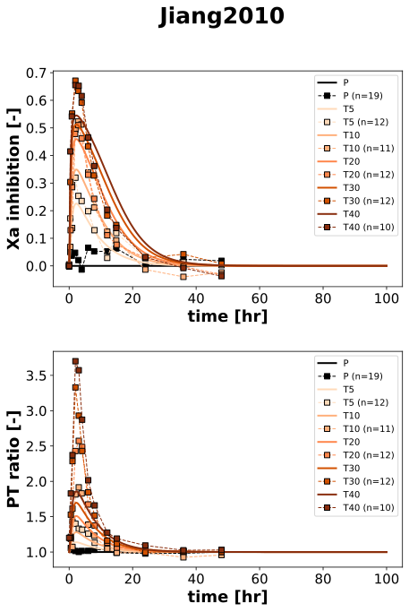

Jiang2010
Models
Datasets
- rivaroxaban_T10: Jiang2010_rivaroxaban_T10.tsv
- rivaroxaban_T20: Jiang2010_rivaroxaban_T20.tsv
- rivaroxaban_T30: Jiang2010_rivaroxaban_T30.tsv
- rivaroxaban_T40: Jiang2010_rivaroxaban_T40.tsv
- rivaroxaban_T5: Jiang2010_rivaroxaban_T5.tsv
- factor Xa inhibition_P: Jiang2010_factor Xa inhibition_P.tsv
- factor Xa inhibition_PF: Jiang2010_factor Xa inhibition_PF.tsv
- factor Xa inhibition_PM: Jiang2010_factor Xa inhibition_PM.tsv
- factor Xa inhibition_T10: Jiang2010_factor Xa inhibition_T10.tsv
- factor Xa inhibition_T10F: Jiang2010_factor Xa inhibition_T10F.tsv
- factor Xa inhibition_T10M: Jiang2010_factor Xa inhibition_T10M.tsv
- factor Xa inhibition_T20: Jiang2010_factor Xa inhibition_T20.tsv
- factor Xa inhibition_T30: Jiang2010_factor Xa inhibition_T30.tsv
- factor Xa inhibition_T30F: Jiang2010_factor Xa inhibition_T30F.tsv
- factor Xa inhibition_T30M: Jiang2010_factor Xa inhibition_T30M.tsv
- factor Xa inhibition_T40: Jiang2010_factor Xa inhibition_T40.tsv
- factor Xa inhibition_T5: Jiang2010_factor Xa inhibition_T5.tsv
- factor Xa inhibition_T5F: Jiang2010_factor Xa inhibition_T5F.tsv
- factor Xa inhibition_T5M: Jiang2010_factor Xa inhibition_T5M.tsv
- prothrombin time (change relative)_P: Jiang2010_prothrombin time (change relative)_P.tsv
- prothrombin time (change relative)_PF: Jiang2010_prothrombin time (change relative)_PF.tsv
- prothrombin time (change relative)_PM: Jiang2010_prothrombin time (change relative)_PM.tsv
- prothrombin time (change relative)_T10: Jiang2010_prothrombin time (change relative)_T10.tsv
- prothrombin time (change relative)_T10F: Jiang2010_prothrombin time (change relative)_T10F.tsv
- prothrombin time (change relative)_T10M: Jiang2010_prothrombin time (change relative)_T10M.tsv
- prothrombin time (change relative)_T20: Jiang2010_prothrombin time (change relative)_T20.tsv
- prothrombin time (change relative)_T30: Jiang2010_prothrombin time (change relative)_T30.tsv
- prothrombin time (change relative)_T30F: Jiang2010_prothrombin time (change relative)_T30F.tsv
- prothrombin time (change relative)_T30M: Jiang2010_prothrombin time (change relative)_T30M.tsv
- prothrombin time (change relative)_T40: Jiang2010_prothrombin time (change relative)_T40.tsv
- prothrombin time (change relative)_T5: Jiang2010_prothrombin time (change relative)_T5.tsv
- prothrombin time (change relative)_T5F: Jiang2010_prothrombin time (change relative)_T5F.tsv
- prothrombin time (change relative)_T5M: Jiang2010_prothrombin time (change relative)_T5M.tsv
- rivaroxaban_recovery_T10: Jiang2010_rivaroxaban_recovery_T10.tsv
- rivaroxaban_recovery_T20: Jiang2010_rivaroxaban_recovery_T20.tsv
- rivaroxaban_recovery_T30: Jiang2010_rivaroxaban_recovery_T30.tsv
- rivaroxaban_recovery_T40: Jiang2010_rivaroxaban_recovery_T40.tsv
- rivaroxaban_recovery_T5: Jiang2010_rivaroxaban_recovery_T5.tsv
- rivaroxaban_urine_T10: Jiang2010_rivaroxaban_urine_T10.tsv
- rivaroxaban_urine_T20: Jiang2010_rivaroxaban_urine_T20.tsv
- rivaroxaban_urine_T30: Jiang2010_rivaroxaban_urine_T30.tsv
- rivaroxaban_urine_T40: Jiang2010_rivaroxaban_urine_T40.tsv
- rivaroxaban_urine_T5: Jiang2010_rivaroxaban_urine_T5.tsv
Figures
- Fig1_Tab2A: Jiang2010_Fig1_Tab2A.svg
- Fig2_3: Jiang2010_Fig2_3.svg
{kind=link}
Fig1_Tab2A

|
Fig2_3
|  |
Code
../../../../experiments/studies/jiang2010.py
from typing import Dict
from sbmlsim.data import DataSet, load_pkdb_dataframe
from sbmlsim.fit import FitMapping, FitData
from sbmlutils.console import console
from pkdb_models.models.rivaroxaban.experiments.base_experiment import (
RivaroxabanSimulationExperiment,
)
from pkdb_models.models.rivaroxaban.experiments.metadata import Tissue, Route, Dosing, ApplicationForm, Health, \
Fasting, RivaroxabanMappingMetaData, Coadministration
from sbmlsim.plot import Axis, Figure
from sbmlsim.simulation import Timecourse, TimecourseSim
from pkdb_models.models.rivaroxaban.helpers import run_experiments
class Jiang2010(RivaroxabanSimulationExperiment):
"""Simulation experiment of Jiang2010.
Subsets of male and female data not simulated.
"""
formulations = ["P", "T5", "T10", "T20", "T30", "T40"]
colors = {
"P": "black",
"T5": "#FFDAB9",
"T10": "#FFB07C",
"T20": "#FF874C",
"T30": "#D25100",
"T40": "#892E0E",
}
bodyweights = {
"P" : 62.1,
"T5": 62.5,
"T10": 59.2,
"T20": 60.5,
"T30": 62.2,
"T40": 63.5,
}
info_pk = {
"[Cve_riv]": "rivaroxaban",
"Aurine_riv": "rivaroxaban_urine",
}
info_pd = {
"Xa_inhibition": "factor Xa inhibition",
"PT_ratio": "prothrombin time (change relative)",
}
def datasets(self) -> Dict[str, DataSet]:
dsets = {}
for fig_id in ["Fig1", "Fig2", "Fig3", "Tab2A"]:
df = load_pkdb_dataframe(f"{self.sid}_{fig_id}", data_path=self.data_path)
for label, df_label in df.groupby("label"):
dset = DataSet.from_df(df_label, self.ureg)
if "rivaroxaban" in label:
dset.unit_conversion("mean", 1 / self.Mr.riv)
dsets[label] = dset
# print(dsets)
return dsets
def simulations(self) -> Dict[str, TimecourseSim]:
Q_ = self.Q_
tcsims = {}
for formulation in self.formulations:
if formulation == "P":
dose = 0
else:
dose = float(formulation[1:])
tcsims[f"{formulation}"] = TimecourseSim(
[Timecourse(
start=0,
end=100 * 60, # [min]
steps=1000,
changes={
**self.default_changes(),
"BW": Q_(self.bodyweights[formulation], "kg"),
"PODOSE_riv": Q_(dose, "mg"),
},
)]
)
return tcsims
def fit_mappings(self) -> Dict[str, FitMapping]:
mappings = {}
for formulation in self.formulations:
# pharmacodynamics
for k, sid in enumerate(self.info_pd.keys()):
name = self.info_pd[sid]
mappings[f"fm_{name}_{formulation}"] = FitMapping(
self,
reference=FitData(
self,
dataset=f"{name}_{formulation}",
xid="time",
yid="mean",
yid_sd=None,
count="count",
),
observable=FitData(
self,
task=f"task_{formulation}",
xid="time",
yid=sid,
),
metadata=RivaroxabanMappingMetaData(
tissue=Tissue.PLASMA,
route=Route.PO,
application_form=ApplicationForm.TABLET,
dosing=Dosing.SINGLE,
health=Health.HEALTHY,
fasting=Fasting.FED,
),
)
# pharmacokinetics
if formulation == "P":
continue
for k, sid in enumerate(self.info_pk.keys()):
name = self.info_pk[sid]
mappings[f"fm_{name}_{formulation}"] = FitMapping(
self,
reference=FitData(
self,
dataset=f"{name}_{formulation}",
xid="time",
yid="mean",
yid_sd="mean_sd" if "urine" in name else None,
count="count",
),
observable=FitData(
self,
task=f"task_{formulation}",
xid="time",
yid=sid,
),
metadata=RivaroxabanMappingMetaData(
tissue=Tissue.URINE if "urine" in name else Tissue.PLASMA,
route=Route.PO,
application_form=ApplicationForm.TABLET,
dosing=Dosing.SINGLE,
health=Health.HEALTHY,
fasting=Fasting.FED,
),
)
return mappings
def figures(self) -> Dict[str, Figure]:
return {
**self.figure_pk(),
**self.figure_pd(),
}
def figure_pk(self) -> Dict[str, Figure]:
fig = Figure(
experiment=self,
sid="Fig1_Tab2A",
num_rows=2,
name=self.__class__.__name__
)
plots = fig.create_plots(
xaxis=Axis(self.label_time, unit=self.unit_time),
legend=True,
)
plots[0].set_yaxis(self.label_riv_plasma, unit=self.unit_riv)
plots[1].set_yaxis(self.label_riv_urine.replace("\n", ""), unit=self.unit_riv_urine)
for formulation in self.formulations:
for k, sid in enumerate(self.info_pk.keys()):
name = self.info_pk[sid]
plots[k].add_data(
task=f"task_{formulation}",
xid="time",
yid=sid,
label=formulation,
color=self.colors[formulation],
)
if formulation == "P":
continue
plots[k].add_data(
dataset=f"{name}_{formulation}",
xid="time",
yid="mean",
yid_sd="mean_sd" if "urine" in sid else None,
count="count",
label=formulation,
color=self.colors[formulation],
linestyle="" if "urine" in sid else "--"
)
return {fig.sid: fig}
def figure_pd(self) -> Dict[str, Figure]:
fig = Figure(
experiment=self,
sid="Fig2_3",
num_rows=2,
name=self.__class__.__name__
)
plots = fig.create_plots(
xaxis=Axis(self.label_time, unit=self.unit_time),
legend=True,
)
plots[0].set_yaxis(self.labels["Xa_inhibition"], unit=self.units["Xa_inhibition"])
plots[1].set_yaxis(self.labels["PT_ratio"], unit=self.units["PT_ratio"])
for formulation in self.formulations:
for k, sid in enumerate(self.info_pd.keys()):
name = self.info_pd[sid]
plots[k].add_data(
task=f"task_{formulation}",
xid="time",
yid=sid,
label=formulation,
color=self.colors[formulation],
)
plots[k].add_data(
dataset=f"{name}_{formulation}",
xid="time",
yid="mean",
yid_sd=None,
count="count",
label=formulation,
color=self.colors[formulation],
)
return {fig.sid: fig}
if __name__ == "__main__":
run_experiments(Jiang2010, output_dir=Jiang2010.__name__)